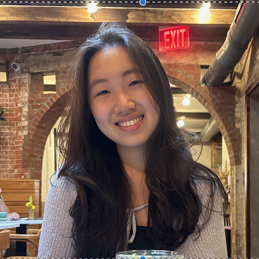

Teaching team
Instructor
{kind=link}
Dr. Mine Çetinkaya-Rundel (she/her) is Professor of the Practice and Director of Undergraduate Studies at the Department of Statistical Science at Duke University. Mine’s work focuses on innovation in statistics and data science pedagogy, with an emphasis on computing, reproducible research, student-centered learning, and open-source education, as well as pedagogical approaches for enhancing the retention of women and underrepresented minorities in STEM.
| Office hours | Location |
|---|---|
| TBD | Bio Sci 111 |
| TBD | Old Chem 211C |
Teaching assistants
Each TA holds office hours. Some TAs are also leaders or helpers for lab sections. Some TAs help out in lecture.
| Name | Role(s) | Section(s) | Office hours | |
|---|---|---|---|---|
| Allison Yang | Lab helper | Th TBD (Sec TBD) | 🔗 | |
| Anric Ngan | Lab helper | Th TBD (Sec TBD) | 🔗 | |
| Cael Elmore | Lab leader | Th TBD (Sec TBD) | 🔗 | |

|
Carl Emerson | Lab leader | Th TBD (Sec TBD) | 🔗 |
| Chelsea Nguyen | Lab helper | Th TBD (Sec TBD) | 🔗 | |

|
Helen Chen | Lab leader | Th TBD (Sec TBD) | 🔗 |
| Hellen Han | Lab helper | Th TBD (Sec TBD) | 🔗 | |
|
 |
Hyunjin Lee | Lab leader | Th TBD (Sec TBD) | 🔗 |
| Josh Lim | Lab leader | Th TBD (Sec TBD) | 🔗 | |

|
Juan Pablo Lopez Escamilla | Lab leader | Th TBD (Sec TBD) | 🔗 |

|
Kenna Roberts | Lab leader | Th TBD (Sec TBD) | 🔗 |
| Max Niu | Lab helper | Th TBD (Sec TBD) | 🔗 | |
| Oliver Gao | Lab helper | Th TBD (Sec TBD) | 🔗 | |

|
Robbie Hao | Lab leader | Th TBD (Sec TBD) | 🔗 |
| Sophie Schwartz | Lab helper | Th TBD (Sec TBD) | 🔗 | |
| Tally Coulter | Lab helper | Th TBD (Sec TBD) | 🔗 | |
| Yasmine Abdel-Rahman | Lab helper | Th TBD (Sec TBD) | 🔗 |
Course coordinator
{kind=link}
Dr. Mary Knox (she/her) is the course coordinator for this course. You can contact her (at mary.knox@duke.edu) with any questions regarding registration, accommodations, missed work, extensions, etc.